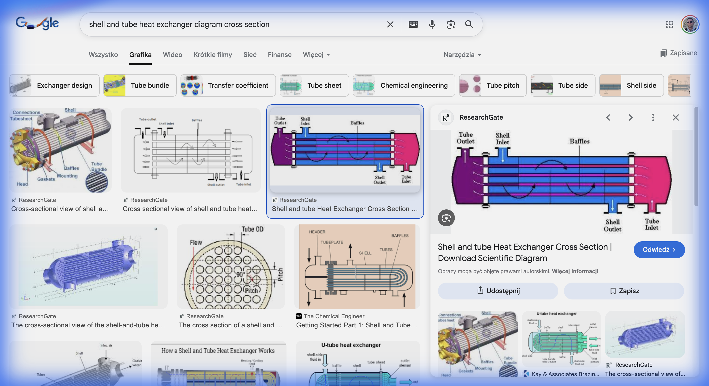
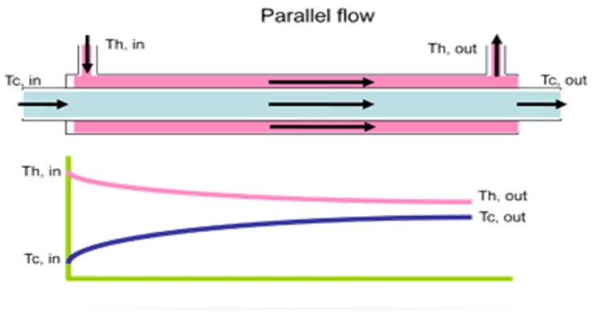
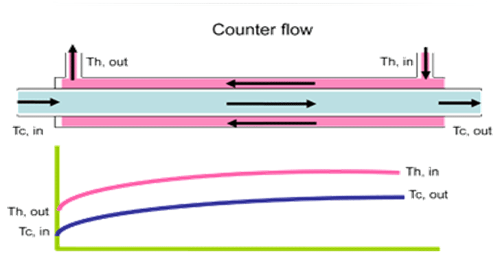

Ćwiczenie 5: Entropia i Jakość Ciepła
🏭 Projekt: Etap 5 - Wymienniki Ciepła
W zakładzie “Termo-Tech” mamy strumień spalin o temperaturze \(300^\circ C\). Inżynier proponuje użyć go do podgrzewania wody zasilającej kocioł. Musimy przeanalizować ten proces pod kątem I i II Zasady Termodynamiki.
Twoje Zadanie:
- Obliczyć ilość ciepła przekazanego w wymienniku (Bilans Energii, I Zasada).
- Obliczyć generację entropii w procesie wymiany ciepła (Bilans Entropii, II Zasada).
- Zrozumieć, dlaczego wymiana ciepła jest nieodwracalna.
Dane:
- Spaliny (gorące):
- \(\dot{m}_s = 1 \text{ kg/s}\)
- \(t_{in}=300^\circ C\)
- \(t_{out}=150^\circ C\)
- Woda (zimna): podgrzewana od \(20\) do \(80^\circ C\).

🔥 Zadanie 5.1: Bilans Energii (I Zasada)
Ile wody możemy podgrzać?
\[ \dot{Q} = \dot{m}_s c_p (t_{in} - t_{out}) \]
\[ \dot{Q} = \dot{m}_w c_w (t_{w,out} - t_{w,in}) \]
Obliczenia:
- \(c_p (spaliny) \approx 1000 \text{ J/kgK}\)
- \(c_w (woda) \approx 4190 \text{ J/kgK}\)
\[ \dot{Q} = 1 \cdot 1000 \cdot (300 - 150) = \mathbf{150 \text{ kW}} \]
\[ \dot{m}_w = \frac{150\,000}{4190 \cdot (80 - 20)} = \frac{150\,000}{251\,400} \approx \mathbf{0.60 \text{ kg/s}} \]
🎲 Zadanie 5.2: Generacja Entropii (II Zasada)
Important
Proces wymiany ciepła przy skończonej różnicy temperatur jest nieodwracalny, czyli generuje entropię (\(\Delta S_{gen} > 0\)).
\[ \Delta \dot{S}_{układu} = \Delta \dot{S}_{spaliny} + \Delta \dot{S}_{woda} \]
\[ \Delta S = m \cdot c \cdot \ln(T_2/T_1) \]
Spaliny (Chłodzenie): \(T_1=573K, T_2=423K\)
\[ \Delta \dot{S}_s = 1 \cdot 1000 \cdot \ln\left(\frac{423}{573}\right) \]
\[ \Delta \dot{S}_s = 1000 \cdot (-0.303) = \mathbf{-303 \text{ W/K}} \] (Entropia spalin maleje, bo oddają ciepło).
Woda (Grzanie): \(T_1=293K, T_2=353K\)
\[ \Delta \dot{S}_w = 0.60 \cdot 4190 \cdot \ln\left(\frac{353}{293}\right) \]
\[ \Delta \dot{S}_w = 2514 \cdot (0.186) = \mathbf{+468 \text{ W/K}} \] (Entropia wody rośnie, bo pobiera ciepło).
🎲 Zadanie 5.2: Generacja Entropii (II Zasada)
Bilans Całkowity:
Important
\[ \Delta \dot{S}_{gen} = -303 + 468 = \mathbf{+165 \text{ W/K}} > 0 \] Entropia całkowita wzrosła! Energia została “zdegradowana” (z wysokiej temperatury 300°C do niskiej 80°C).
💎 Zadanie 5.3: Jakość Energii (Egzergia)
Czy to było mądre wykorzystanie ciepła? Mogliśmy użyć spalin 300°C do napędu silnika cieplnego, a użyliśmy ich tylko do grzania wody 80°C.
Strata Pracy (Twierdzenie Gouy-Stodoli): \[ \dot{B}_{str} = T_0 \cdot \Delta \dot{S}_{gen} \] Przyjmijmy \(T_0 = 293 K\) (temp. otoczenia).
\[ \dot{B}_{str} = 293 \cdot 165 = \mathbf{48\,345 \text{ W} \approx 48 \text{ kW}} \]
W procesie prostego podgrzewania wody straciliśmy bezpowrotnie 48 kW potencjalnej mocy mechanicznej! To cena za nieodwracalność procesu.
🔄 Zadanie 5.4: Sprawność Carnota Wymiennika
Ile pracy moglibyśmy teoretycznie uzyskać z naszego strumienia spalin (zamiast tylko grzać wodę)?
Silnik Carnota między \(T_{gor} = 573K\) a \(T_{zim} = 293K\): \[ \eta_C = 1 - \frac{T_{zim}}{T_{gor}} = 1 - \frac{293}{573} \approx \mathbf{48.9\%} \]
Maksymalna praca: \[ \dot{B}_{max} = \eta_C \cdot \dot{Q}_{spalin} = 0.489 \cdot 150 \approx \mathbf{73.4 \text{ kW}} \]
Straciliśmy z tego \(48 \text{ kW}\) (egzergia zniszczona w wymienniku). Odzyskaliśmy \(0 \text{ kW}\) pracy (bo wymiennik nie produkuje pracy!).
Sprawność egzergetyczna wymiennika: \[ \psi = 1 - \frac{\dot{B}_{str}}{\dot{B}_{max}} = 1 - \frac{48}{73.4} \approx \mathbf{35\%} \]
Uwaga
Tylko 35% potencjału energetycznego spalin wykorzystujemy mądrze. Reszta jest tracona na nieodwracalność.
🏗️ Zadanie 5.5: Wymiennik Przeciwprądowy vs Współprądowy
Inżynier proponuje zmianę z wymiennika współprądowego na przeciwprądowy. Jak to wpływa na generację entropii?
 Współprądowy:
- Spaliny: \(300 \rightarrow 150^\circ C\)
- Woda: \(20 \rightarrow 80^\circ C\)
- \(\Delta T_{min}\) (na wylocie): \(150 - 80 = 70 K\)
- \(\Delta S_{gen} = 165 \text{ W/K}\) (obliczone)
 Przeciwprądowy:
- Spaliny: \(300 \rightarrow 150^\circ C\)
- Woda: \(20 \rightarrow 130^\circ C\) (możliwa wyższa \(t_{out}\)!)
- \(\Delta T_{min}\) (na zimnym końcu): \(150 - 130 = 20 K\)
- Strumień wody: \(\dot{m}_w = \frac{150\,000}{4190 \cdot 110} \approx 0.326\) kg/s
🏗️ Zadanie 5.5 (cd.): Entropia Wymiennika Przeciwprądowego
Obliczenie entropii dla wymiennika przeciwprądowego:
\[ \Delta S = m \cdot c \cdot \ln(T_2/T_1) \]
\(\Delta \dot{S}_w = 0.326 \cdot 4190 \cdot \ln(403/293) = 1366 \cdot 0.318 = +434\) W/K
\(\Delta \dot{S}_{gen} = -303 + 434 = \mathbf{+131 \text{ W/K}}\)
Wniosek
Redukcja z \(165\) do \(131\) W/K → o 21% mniejsza generacja entropii!
Wymiennik przeciwprądowy jest termodynamicznie lepszy, bo utrzymuje mniejszą różnicę temperatur wzdłuż swojej długości.
📊 Zadanie 5.6: Kaskada Wymienników
Zamiast jednego wymiennika, użyjmy dwóch kolejnych (kaskada):
- Wymiennik A: Spaliny \(300 \rightarrow 220^\circ C\) → Podgrzewanie wody kotłowej do \(90^\circ C\).
- Wymiennik B: Spaliny \(220 \rightarrow 150^\circ C\) → Podgrzewanie wody użytkowej do \(50^\circ C\).
Bilans Wymiennika A:
\(\dot{Q}_A = 1 \cdot 1000 \cdot (300-220) = 80 \text{ kW}\) | \(\dot{m}_{w,A} = \frac{80\,000}{4190 \cdot (90-20)} = 0.273\) kg/s
Bilans Wymiennika B:
\(\dot{Q}_B = 1 \cdot 1000 \cdot (220-150) = 70 \text{ kW}\) | \(\dot{m}_{w,B} = \frac{70\,000}{4190 \cdot (50-15)} = 0.477\) kg/s
Tip
Kaskada zmniejsza różnice temperatur w każdym wymienniku → mniejsza generacja entropii → lepsze wykorzystanie egzergii spalin. To zasada stosowana w kotłach kondensacyjnych i systemach kogeneracyjnych.
🌍 Zadanie 5.7: Entropia a Otoczenie
Na koniec: obliczmy, ile entropii “eksportuje” nasz zakład do otoczenia przez komin (spaliny \(150^\circ C\) do powietrza \(20^\circ C\)).
Spaliny wychodzą z wymiennika: \(\dot{m}_s = 1\) kg/s, \(t_{out} = 150^\circ C\). Chłodzą się do \(t_{atm} = 20^\circ C\) w atmosferze.
\[ \dot{Q}_{komin} = 1 \cdot 1000 \cdot (150 - 20) = \mathbf{130 \text{ kW}} \]
Ta energia jest bezpowrotnie tracona (za mała różnica temperatur do praktycznego odzysku).
\[ \Delta \dot{S}_{atm} = \frac{\dot{Q}_{komin}}{T_{atm}} = \frac{130\,000}{293} \approx \mathbf{444 \text{ W/K}} \]
Important
Każda sekunda pracy kotła generuje 444 W/K entropii w otoczeniu! To termoynamiczny koszt ogrzewania. Kotły kondensacyjne redukują \(t_{out}\) do ~\(50^\circ C\), zmniejszając te straty o ponad 60%.
🏠 Zadanie Domowe (Raport 5)
Temat: Optymalizacja Wymiennika.
Zaproponuj zmianę parametrów, aby zmniejszyć stratę egzergii (zbliżyć proces do odwracalnego).
- Zwiększ temperaturę wody wylotowej do \(95^\circ C\) (zamiast \(80^\circ C\)).
- Oblicz nowy strumień pary wodnej.
- Oblicz nową generację entropii \(\Delta S_{gen}\).
- Wniosek: Czy zbliżenie temperatur czynników (\(T_{spalin} \approx T_{wody}\)) zmniejsza generację entropii?
Tip
Im mniejsza różnica temperatur między czynnikami w wymienniku (\(\Delta T\)), tym mniejsza generacja entropii i wyższa sprawność egzergetyczna (II Zasady).

Termodynamika Techniczna - Ćwiczenia Projektowe